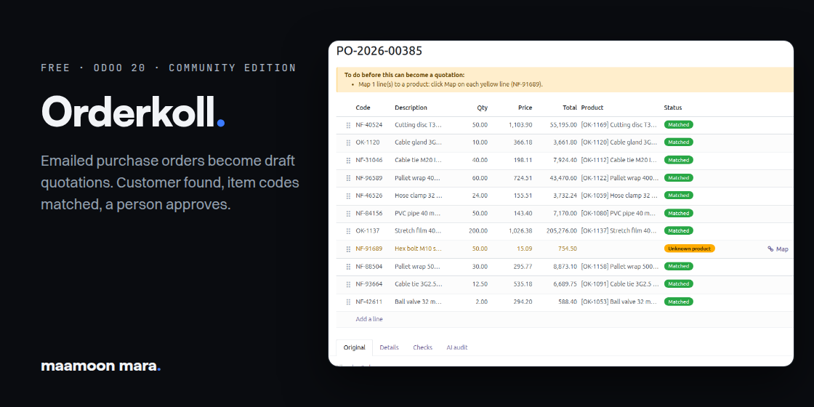
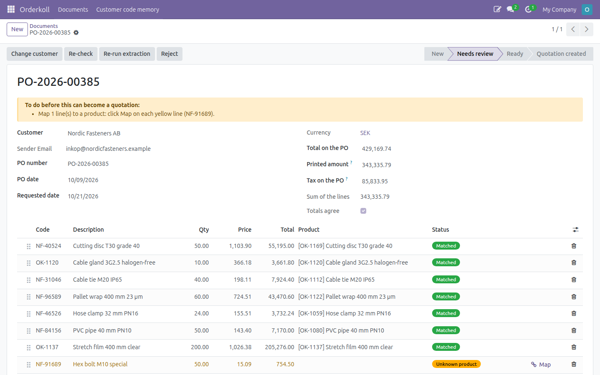
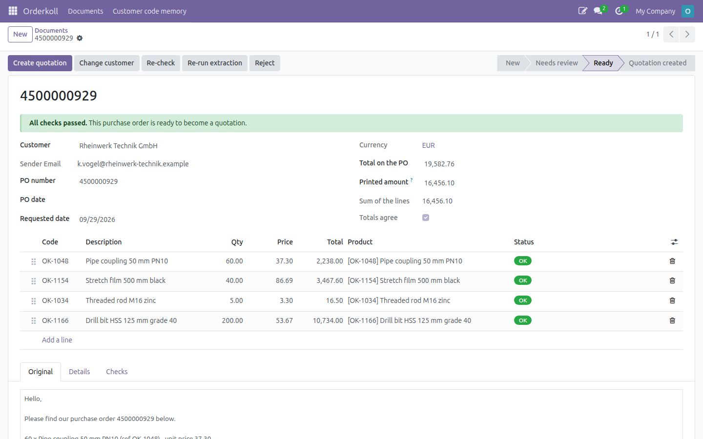
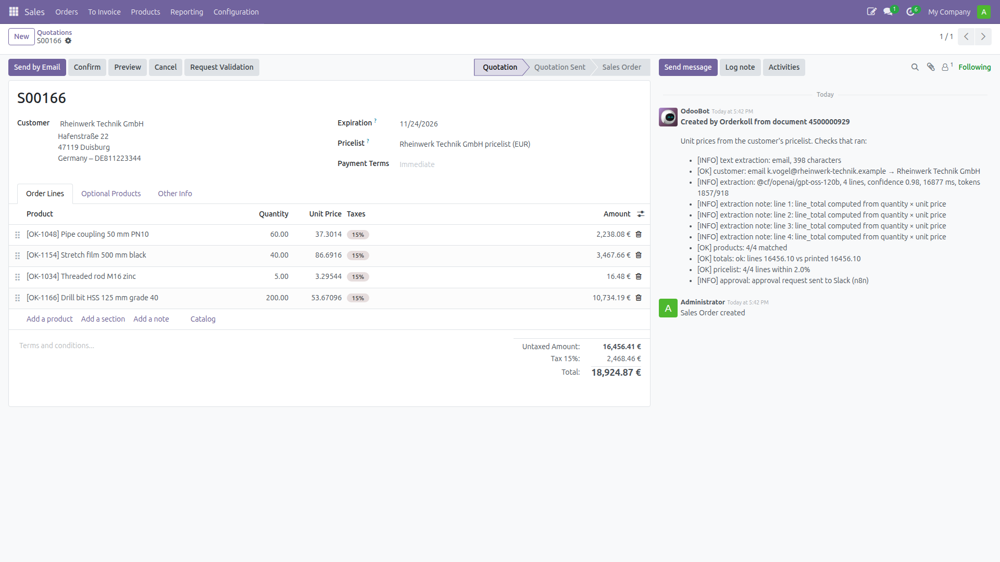
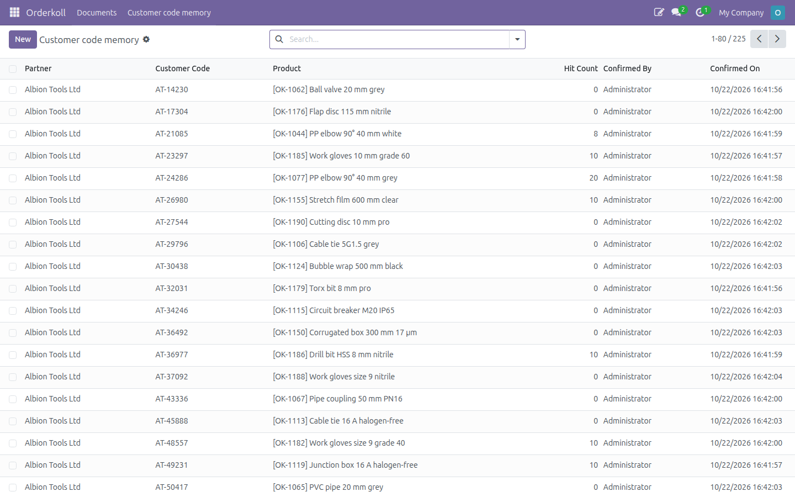
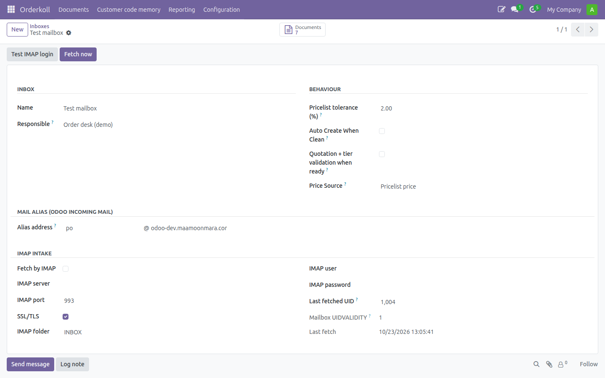

Your customers email purchase orders as PDF, Excel, CSV or plain text, and someone retypes them into Odoo. Orderkoll takes each mail, keeps the original file, finds the customer from the sender, matches their item codes to your products, and prepares a document that a person reviews before a quotation exists. Nothing is confirmed automatically.

The purchase order beside its lines, and a plain-language To-do box that says what stops it. Here one item code is unknown: click Map, pick the product once, and Orderkoll remembers it for this customer.
Reading the order lines out of the document needs an extraction engine. Without one, the lines are typed on the review screen and everything else above works the same. The AI extraction engine and the price, totals and duplicate checks are in the separate module Orderkoll Pro.
The free module sends nothing outside your Odoo, except the alerts you switch on yourself (Telegram, or a webhook URL you enter), which carry only the document number, the inbox name and a link back to it.

A clean document: one click on Create quotation.

The draft quotation, with the purchase order attached and every check written in the chatter.

Customer code memory: each customer's own item codes, mapped once.

An inbox: mail alias or IMAP, the responsible person, and the price source for quotations.
Screens shown with Orderkoll Pro installed. The free module shows the same screens without the price, totals and duplicate checks.
Odoo 20.0 Community, on your own server. Odoo Online does not allow custom modules.
Python packages: pdfplumber, pypdf, openpyxl; optional pytesseract with Tesseract for scanned PDFs.
maamoon mara. — built and supported by Maamoon Mara, Gothenburg, Sweden